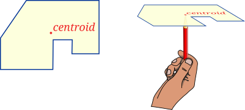
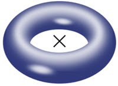
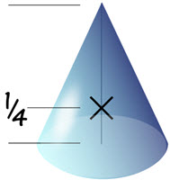
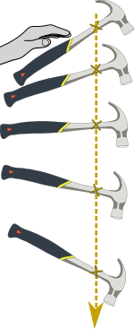
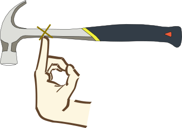

Centroid and Center of Gravity
The Centroid is the average position of all the points of an object.

When we cut a plane shape from a piece of card it balances perfectly on its centroid.
The geographic center of the USA (near Lebanon, Kansas) was found this way in 1918.
Center of Gravity
The Center of Gravity is the same as the centroid when the density is the same throughout.
They are often marked by a cross or dot and sometimes the letters CG or just G

For a torus the centroid is at the very center
(even though there's no part of the torus there!)

For a right solid cone the centroid is on
the center line and ¼ of the way from the base
Just like the torus and the cone, a car also has a center of gravity somewhere inside it (often around the middle of the car, around the floor).
It's center of gravity can be hard to figure out, as there's lots of empty space and materials of different density (such as the engine vs the seats).
When doing calculations we can often replace an object with its center of gravity.

Example: You drop a hammer!
It may spin a little, but its center of gravity will fall straight down.
It also drops faster and faster due to gravity.
(The only complication is air resistance, which affect its motion more as it goes faster.)
A force that goes through the center of gravity won't cause any rotation. In fact you can balance an object by supporting it directly below its center of gravity.

Centroid vs. Center of Gravity vs. Center of Mass
- Centroid is the geometric center (strictly about shape)
- Center of Mass is where the mass is balanced (strictly about matter)
- Center of Gravity is where the weight is balanced (about gravity's pull)
If an object has the same density throughout, and gravity is uniform, they are all at the exact same point!
Centroid of a Triangle
For a triangle we can find the centroid very easily:
- Find the midpoint of each side of the triangle
- Draw a line from each midpoint to the corner (vertex) of the opposite side. These lines are called medians
- The three medians cross at the centroid of the triangle
Try moving points A, B or C:

An Amazing Property
The centroid divides each median into a 2:1 ratio (from the vertex to the opposite side).
Draw one yourself and measure!